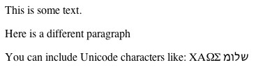
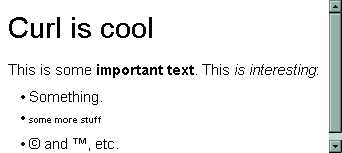
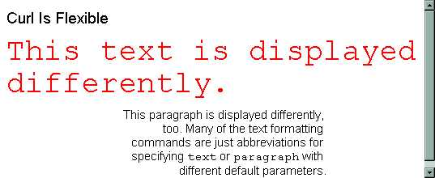
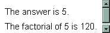
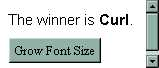
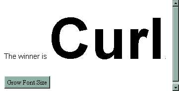
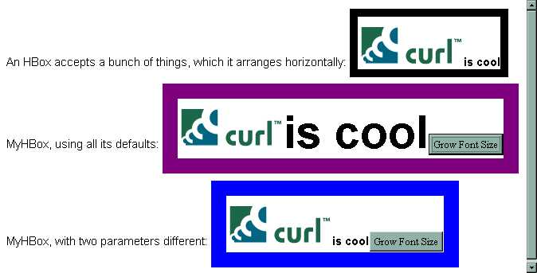
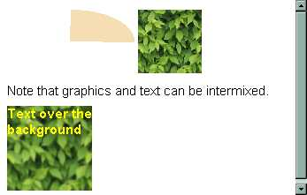
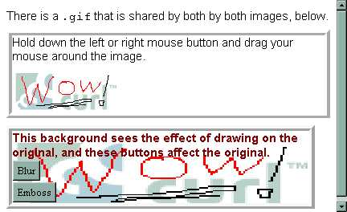

Curl™ is the original unified RIA architecture. Starting in an MIT laboratory, by the year 2000 it embodied such HTML5+CSS+Javascript+WebGL features as style sheets, 2D and 3D graphics, drag and drop GUI, a Document Object Model, offline storage, secure file access, and inter-app/inter-doc networking.
In 2002, the following overview appeared in Dr. Dobb's Journal's Lightweight Languages Workshop CD-ROM. The original article included interactive examples using a plugin provided on the CD, which are presented here as static images.
Abstract The combination of Curl™ technologies -- language, libraries, and implementation -- is designed for the practical distribution of full-featured applications over the Web. These execute with the interactive feel of a native application rather than a static Web page. This article provides an introductory overview of the these technologies. It uses source code and graphics to illustrate the progression from:The integration of these in a unified framework makes for richer applications that are easier to deploy and cheaper to operate relative to more specialized technologies. A side-bar uses code fragments to illustrates features of the language itself.
- static content with client-side formatting,
- through more interactive "live" pages and generative graphics,
- to more complex object-oriented applications.
No single programming technique is ideal for every kind of problem. There are lots of specialized technologies designed for specific aspects of a Web application, yet trying to combine them creates problems and bloat. It is difficult to deploy a highly interactive Web site that juggles static HTML, Javascript procedures, Java objects, perl scripts, plug-ins, and a plethora of ever-changing Microsoft products. This is quick-sand -- unstable bedrock. It is hard to make the technologies work together and interact properly with each other. It is hard to control the client set-up for any one of these, much less in combination. If the fragile result works, it is huge. Typically, the simplest gesture by the user causes a request to the server to generate another mass of code to be downloaded. The client's screen flickers, pauses, and far too often, crashes.
Curl™ technology solves these problems -- by allowing developers to create Web documents with almost any sort of content, from simple formatted text to complex interactive applets. Curl provides a rich set of formatting operations similar to those of HTML as well as scripting and robust object-oriented programming capabilities. Each capability allows a compact program to be executed on the client, reducing interaction times and server load. By unifiying these with a consistent semantic model, communications obstacles between separately enapsulated fragments of content can be avoided.
The value of the technology is greater than the sum of its parts. The total download size and cost of ownership is less than with other individual technologies, because there is less glue code and translation, and fewer kinds of code. This allows a higher ratio of information content to infrastructure.
The Curl™ technology infrastructure has this foundation:
.curl file) sent from an HTTP server and
displayed using the Surge™ plug-in. Curl™ content
language programs can also be deployed as scripts.
Given this integrated framework, incrementally improving an application's functionality requires only incremental skill aquisition and incremental, localized code changes. For example, you can start with a page of text to be displayed, add formatting, interaction, graphics and other computation, and so forth -- without changing languages or execution environments. The next four sections give examples of this progression, illustrating the breadth of the Curl content language, libraries, and deployment engine. A fifth section gives an overview of how the framework supports reliable deployment and execution.
.curl file can contain ordinary text, and
a plug-in displaying that content formats it.
|  | The screen shot to the left shows how the black text of the source code below is displayed in a browser using the Surge™ plug-in. |
This is
some text.
Here is a || This comment
different paragraph || is not displayed
You can include Unicode characters like: \u03a7\u0391\u03a9\u03a3
\u05de\u05d5\u05dc\u05e9
| |
The plug-in treats a blank line as a paragraph separator. It collapses whitespace within a paragraph, and formats the paragraph to fit the screen.
|  | The braces in the code below surround tagged text similarly to
HTML. It produces the result shown in the screen shot to the left. The formatting tags are actually operators from a library that produce data that the plug-in displays specially. |
{heading Curl is cool}
This is || Text with formatting.
some {bold important text}.
This {italic is interesting}:
{itemize || Set up a group of items.
{item Something.} || Each item gets a bullet.
{item
{tiny some || All this stuff is in a tiny font.
more stuff
}
}
{item {copyright} and {trademark}, etc.
}
}
| |
The text formatting commands can accept parameters, as shown in the following example.
|  |
{heading level = 3, Curl Is Flexible}
{monospace
color = "red",
font-size = 0.4inch,
This text is displayed differently.
}
{paragraph
paragraph-left-indent = 1.5inches,
paragraph-right-indent = 3cm,
paragraph-justify = "right",
font-family = "sans-serif",
This paragraph is displayed differently, too. Many of the
text formatting commands are just abbreviations for specifying
{monospace text} or {monospace paragraph} with different default parameters.
}
|
Unlike HTML, an applet in the Curl language can define its own text formats:
The source below defines two text formats, mine
and yours, and then uses both of them, as shown to the left.
|
|
{define-text-format mine as text with
color = "red",
font-size = 10point
}
|| yours is like mine
{define-text-format yours as mine with
color = "blue",
font-family = "monospace"
}
Some
{mine text is mine, and}
{yours some text is yours.}
| |
As shown here, the definitions can be in the same file as the text
to be displayed, but the definitions do not appear in the display.
They can also be put into separate files to be used as a "style sheet"
that can be included by other .curl files.
|  | The source below defines a variable
named answer and a procedure named
factorial. Everything that isn't in braces is
treated as text to be formatted. The result is shown to the left. |
{let answer = 1 + 4} || A variable with computation.
The answer is {value answer}. || A "text format" that evaluates code.
{define-proc {factorial number}
{return {if number == 1
then 1
else number * {factorial number - 1}
}
}
}
The factorial of {value answer} is {factorial answer}.
| |
Curl™ libaries provide a large number of operations and types of data; developers can also create their own. The usual Graphical User Interface (GUI) elements are provided, and they can interact with other content, such as the text in this example.
|  | The code below defines a variable and a button that changes a parameter of the data in that variable. The screen shot to the left shows how this is displayed in the plug-in before the user presses the button. |
|| A variable holding an object with some marked-up content.
{let winner = {TextFlowBox {bold Curl}}}
|| Code that produces text can
The winner is {value winner}. || be inserted into ordinary text.
|| Produce not text to be formatted or a value to be computed, but
|| a GUI object for display.
{CommandButton
|| Paremeterization such as we have already seen.
label = "Grow Font Size",
|| A script to be stored in the GUI object, and accesed by the
|| plug-in when the associated event occurs.
{on Action do
{set winner.font-size = winner.font-size + 4}}
}
| |
|  | This is how the display looks after the user has pressed the button several times. |
The language coherently unifies the multiple paradigms of object-oriented, functional, procedural, and declarative programming. It uses both strong, static type declarations and dynamic, first-class, runtime type information. Where consistent with Curl's Web-centric goals, the language is similar to Java and other C-influenced languages, but it avoids the known weaknesses. (See, for example, "A Comparison of the Curl Content Language and Java" in the appendix to the Developer's Guide.)
The following example shows what a class definition and type declarations look like in the language. The display shows first the use of a built in layout box mechanism. It then shows two uses of our own layout box. Our layout box has some parameters set by default, and includes a button to grow the size of the text. The picture below shows what this looks like after the user has pressed the middle box's button several times.
|  |
|| We'll use picture a few times. It is declared to be a Url.
{let picture:Url = {url "http://www.curl.com/img/curllogo1.gif"}}
An HBox accepts a bunch of things, which it arranges horizontally:
{HBox
border-width = 0.1in,
border-color = "black",
{image source = picture}, {bold is cool}}
|| MyHBox is a new kind of content that behaves like HBox.
{define-class MyHBox {inherits HBox}
|| It is constructed like an HBox, but also accepts an int parameter.
{constructor {default increment:int = 2, ...}
{construct-super
border-width = 0.2in,
border-color = "purple",
...,
{CommandButton label = "Grow Font Size",
{on Action do
{set self.font-size = self.font-size + increment}
}
}
}
}
}
MyHBox, using all its defaults:
{MyHBox {image source = picture}, {bold is cool}}
MyHBox, with two parameters different:
|| Note that MyHBox accepts the same overriding parameters as HBox.
{MyHBox
increment = 10,
border-color = "blue",
{image source = picture}, {bold is cool}}
|
|  | The code below intermixes formated text,
jpeg images, graphics code and layout.Note the continued use of named properties, variables, and functional composition of results. The Surge™ plug-in displays text much more clearly than the images shown here. The sample jpegs in these examples reduce combined text and graphics to the lowest common denominator, which the plug-in does not do. |
|| Packages can be written separately and imported into Curl content.
{import * from CURL.GRAPHICS.IMAGEFILTER}
{let leaves:Url = {url "curl://source/Textures/leaves.jpg"}}
|| Properties like color and width can be specified for graphical objects.
{EllipticalArcGraphic color = "wheat",
wedge-size = 270degrees,
width = 1.5in, height = 0.75in
}
|| image creates a graphical object from the pixmap in a graphical source.
{image width = 0.75in, height = 0.75in, source = leaves}
Note that graphics and text can be intermixed.
|| A Frame is a graphical object.
|| Here we take the same URL that gave the data for the image, make a
|| FillPattern from it, blur that result (using a filter provided by the
|| CURL.GRAPHICS.IMAGEFILTER package), and use that as the background for our
|| Frame object. The Frame's content is the bold text.
{Frame width = 1in, height = 1in,
background = {blur {FillPattern leaves}},
{bold color = "yellow", Text over the background}
}
| |
More graphics demos and information are on the Web site and in the documentation.
You are not restricted to what is built in to existing libraries. Because the language allows definition, you can use one language and environment for both creating and using new capabilities.
What's more, when graphics and user interaction operate in the same environment, they can affect each other.
The following example shows some text, buttons, and procedures such as we have already seen, but the PaintableGraphic is a new type of object that handles mouse events by manipulating its own pixels.
|  | The box to the left shows what the display looks like after the
user has drawn the word "Wow!" over the first image. The writing on
the upper image instantly appears over the lower image, too, because
they share the same underyling data. Using the buttons on the lower image also affects both. |
{import * from CURL.GRAPHICS.IMAGEFILTER}
{include "PaintableGraphic.curl"}
There is a {monospace .gif} that is shared by both by both images, below.
{let shared-fill-pattern:FillPattern =
{brightness || Wash out the image with a brightness filter.
{FillPattern {url "http://www.curl.com/img/curllogo1.gif"}},
0.7
}
}
{let drawable-picture:PaintableGraphic =
{PaintableGraphic shared-fill-pattern}
}
{VBox border-width = 5pt, border-style = "ridge",
{text Hold down the left or right mouse button and drag your mouse
around the image.},
{value drawable-picture}
}
{define-proc {make-button label, filter}
{return
{CommandButton label = label,
{on Action do
{filter shared-fill-pattern, out = shared-fill-pattern}
{drawable-picture.request-draw}
}
}
}
}
{VBox border-width = 5pt , border-style = "ridge",
width = 4in,
color = "maroon",
background = shared-fill-pattern,
{bold This background sees the effect of drawing on the original,
and these buttons affect the original.},
{make-button "Blur", blur},
{make-button "Emboss", emboss}
|| Other filters you can try are: autolevel, sphere, twirl,
|| contrast-decrease, contrast-increase,
|| brightness-increase, brightness-decrease
}
| |
.curl file directly displayed as a page by the plug-in
is called an applet. Applets can be embedded in other
technologies (e.g, HTML) and vice versa.
The engine is given a file to process. The file is Just-In-Time (JIT) compiled into native machine code by the engine, and the resulting machine instructions are executed.
The plug-in and IDE save the values resulting from the execution of top-level code, format them, and then display the result.
A group of files can be packaged together and treated as a reusable unit. When a file being processed imports a package that is not already loaded, Curl's engine gets the package on the network. Packages may be distributed as source or as pre-parsed binaries. Such binaries are still more compact than machine code, and are still JIT compiled on the client.
Packages are versioned. Different versions are treated as distinct packages and an application can specify which versions of a package are to be used. Different versions of the same package can be used simultaneously by different parts of the same application. The entire engine implementation is similarly versioned.
When the engine runs more than one application (e.g., the plug-in displaying multiple applets in its history), each running application is treated as a separate memory area. Different applications using the same package work with different copies of (the heap area of) the package.
A small persistent object storage mechanism is provided. This is used:
By default, Curl's engine prevents applets from doing such potentially compromising things as interacting with the operating system or other programs, using too many resources, or displaying graphics that purport to be something they are not. Such applets cannot connect to Web sites other than the ones they came from. They can use a limited amount of provided persistent storage.
End users can elect to specify that applets from certain directories (on their own or other machines) are to be granted additional privileges. The source may be required to be verifiable using SSL.
Applets, scripts, and applications written in the language cannot corrupt or misuse their memory or that of any other technology's processes.
Curl™ technology covers a lot of ground. Procedural graphics and text can be integrated. The same language can be used to define extended formatting operations and a validating GUI suite. Programs play well with others by incorporating standard technologies like HTTP and XML, or by being embedded in HTML, and so forth. Best practices are supported in the libraries, deployment mechanims, and the language itself.
By combining this breadth with proper security and web-delivered module versioning, we can reliably deploy applications that do more computation on the client with less round-trips between client and server. Dynamically fetched application data used by a single, flexible "page" means less data is needs to be transferred on each trip. (For example, the client does not need to reload the unchanging parts of the display.) Repeated use of custom formats, personalized GUI, and procedural graphic definitions allows the whole application mechanism to be more compact. It all comes together to produce a dramatically reduced computation and download load on the server -- often an order of magnitude or more. This gives users a better experience and site owners a lower operating cost and a stickier site.
We've seen plenty in Curl™ technology that a variety of developers can find familiar. When choosing what to begin using next of all the different Web technologies, those integrated through the Curl™ content language should be the most rewarding.